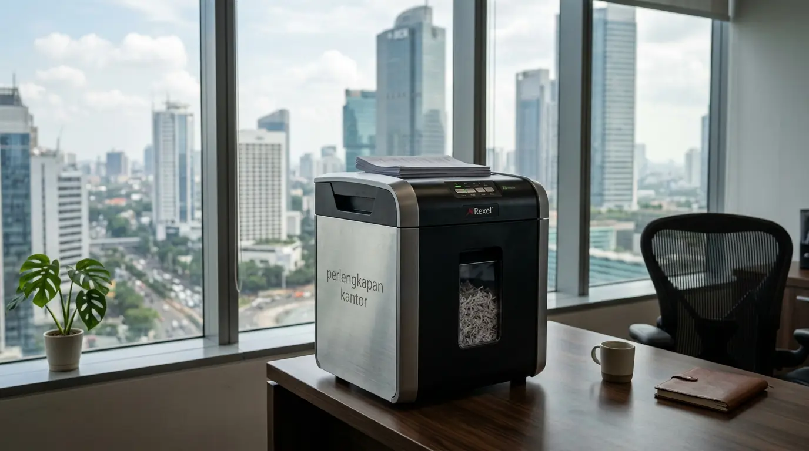

Mengapa Paper Shredder Kantor Sangat Vital bagi Sektor Hukum dan Keuangan?
Paper shredder kantor menjadi investasi krusial karena sektor hukum dan keuangan mengelola ribuan berkas sensitif yang rentan terhadap spionase industri dan kejahatan identitas fisik. Sektor hukum dan keuangan menangani informasi berharga seperti laporan keuangan, berkas gugatan, rahasia dagang, hingga data identitas pribadi. Membiarkan dokumen ini dibuang dalam bentuk utuh berisiko tinggi memicu kebocoran data.
Berdasarkan laporan keamanan informasi Ponemon Institute periode 2024–2025, sebanyak 23% kasus kebocoran data korporat diawali dari kelalaian pengelolaan dokumen cetak dan pembuangan berkas tanpa dihancurkan.
Di Indonesia, pelaksanaan penuh regulasi Perlindungan Data Pribadi (UU PDP) per akhir 2024 hingga 2026 menegaskan bahwa setiap entitas bisnis wajib melindungi data konsumen atau klien. Kebocoran data fisik dapat berujung pada sanksi denda administratif hingga 2% dari total pendapatan tahunan perusahaan. Oleh karena itu, menyediakan paper shredder sebagai standar perlengkapan kantor bukan sekadar pilihan operasional, melainkan langkah mitigasi risiko hukum yang tidak dapat ditawar.
Mengapa Dokumen Cetak Menjadi Celah Utama Kebocoran Data Perusahaan?
Dokumen cetak menjadi celah keamanan karena sering kali diabaikan dalam sistem keamanan digital, padahal berkas fisik sangat mudah diakses, difoto, atau dicuri secara langsung. Banyak perusahaan memfokuskan anggaran pada cybersecurity digital, namun abai terhadap dokumen yang berada di atas meja kerja atau di tempat sampah.
Teknik dumpster diving atau pencarian informasi dari tempat sampah korporat tetap menjadi modus operandi efektif bagi oknum tidak bertanggung jawab untuk mencuri rahasia bisnis. Dokumen berupa cetakan draf kontrak, cetakan laporan transaksi bank, hingga berkas SPT pajak mengandung entitas data berisiko tinggi.
Dengan menempatkan mesin penghancur kertas di titik-titik strategis kantor, seluruh staf dapat langsung memusnahkan kertas yang sudah tidak terpakai. Proses pemusnahan secara langsung (at-source destruction) menghilangkan potensi kebocoran data sebelum dokumen tersebut keluar dari area internal perusahaan.

Penggunaan paper shredder perlengkapan kantor di ruang kerja korporat untuk memusnahkan dokumen finansial dan hukum seketika.
Bagaimana Menentukan Spesifikasi Paper Shredder yang Tepat untuk Kantor Anda?
Spesifikasi paper shredder harus disesuaikan dengan volume dokumen harian, tingkat kerahasiaan (DIN 66399 security level), serta kapasitas potong mesin untuk menjaga efisiensi kerja.
Untuk kantor hukum dan keuangan, mesin dengan tipe potong Cross-Cut (P-3/P-4) atau Micro-Cut (P-5 ke atas) adalah standar minimal. Tipe Strip-Cut tidak direkomendasikan karena potongan kertas masih dapat dirangkai kembali oleh pihak luar. Selain itu, pertimbangkan siklus kerja (duty cycle) mesin agar dapat beroperasi tanpa mengalami panas berlebih (overheating) saat pemusnahan massal arsip berkala.
| Tipe Pemotongan | Ukuran Potongan | Tingkat Keamanan | Rekomendasi Sektor |
|---|---|---|---|
| Strip-Cut | 6 mm (Garis Panjang) | Low (P-1 s/d P-2) | Dokumen Umum Non-Rahasia |
| Cross-Cut | 4 x 38 mm (Konfeti) | Medium-High (P-3 s/d P-4) | Kantor Hukum & Operasional Keuangan |
| Micro-Cut | 2 x 15 mm (Serbuk/Mikro) | Maximum (P-5 s/d P-7) | Audit, Perbankan, & Berkas Rahasia Negara |
- Tingkat P-4 (Cross-Cut): Menghasilkan ±400 potongan konfeti per lembar A4, standar internasional ideal untuk draf gugatan hukum, kontrak bisnis, dan data gaji karyawan.
- Tingkat P-5 (Micro-Cut): Menghasilkan ±2.000 partikel mikro berukuran 2x15 mm yang mustahil disusun ulang, sangat direkomendasikan untuk audit forensik perbankan dan laporan pajak rahasia.
- Duty Cycle & Kapasitas Bin: Pilih unit dengan wadah penampung minimal 20–30 liter dan siklus kerja kontinu lebih dari 15–30 menit untuk kantor skala menengah ke atas.
Apa Saja Kesalahan Umum dalam Mengelola Dokumen Rahasia di Kantor?
Kesalahan umum mencakup menumpuk berkas sensitif di area terbuka, menunda proses pemusnahan kertas, dan menggunakan mesin pemotong standar yang tidak sesuai volume kerja.
Menumpuk kertas bekas di dekat printer dengan dalih akan didaur ulang tanpa dihancurkan terlebih dahulu adalah kebiasaan fatal. Selain itu, memilih unit penghancur kertas yang terlalu kecil untuk kapasitas kantor yang besar dapat menyebabkan mesin cepat rusak akibat paper jam berulang. Memastikan unit kerja dilengkapi dengan perlengkapan kantor berkualitas tinggi yang sesuai kapasitas operasional adalah kunci menjaga kelancaran alur kerja dan keamanan data.
Apa Manfaat Ekonomis Jangka Panjang dari Penggunaan Paper Shredder Berkualitas?
Penggunaan paper shredder berkualitas menekan risiko kerugian finansial akibat sanksi hukum kebocoran data serta menghemat biaya pengelolaan dan penyimpanan arsip fisik.
Investasi pada unit mesin pemotong kertas yang tangguh jauh lebih murah dibandingkan potensi denda akibat pelanggaran data privasi atau hilangnya kepercayaan klien yang bernilai miliaran rupiah. Selain itu, kertas yang telah dihancurkan memakan ruang yang jauh lebih sedikit di dalam wadah limbah, mempermudah proses daur ulang lingkungan, serta mengurangi biaya pengangkutan sampah kantor secara berkala.
Bagaimana Cara Merawat Paper Shredder agar Awet dan Tidak Mudah Macet?
Perawatan dilakukan dengan rutin memberikan pelumas khusus (shredder oil), tidak melebihi kapasitas lembar maksimal, serta membersihkan wadah penampung secara berkala.
Minyak khusus paper shredder membantu menjaga ketajaman pisau pemotong dan mencegah penumpukan debu kertas pada poros mesin. Hindari memasukkan klip kertas berukuran besar, stapler kelas berat, atau material plastik tebal jika mesin tidak dirancang khusus untuk bahan tersebut.
FAQ tentang Paper Shredder Kantor
Kesimpulan Praktis
Menjaga kerahasiaan dokumen fisik melalui pengerjaan pemusnahan yang sistematis adalah investasi keamanan mutlak bagi setiap firma hukum dan lembaga keuangan. Penggunaan paper shredder terbukti efektif menekan risiko kebocoran data pribadi, menjaga kepatuhan hukum, dan meningkatkan profesionalisme perusahaan. Jangan biarkan data sensitif bisnis Anda berada dalam ancaman akibat kelalaian sederhana. Segera lengkapi operasional perusahaan Anda dengan memilih perlengkapan kantor terbaik dan tepercaya sekarang untuk perlindungan maksimal.

Penulis: Spesialis Keamanan Dokumen Kantor
Divisi Konsultasi Keamanan Arsip & Solusi Tata Kelola Perlengkapan Kantor di Perlengkapan Kantor. Artikel ini telah ditinjau secara berkala oleh Konsultan Privasi & Tata Kelola Data berlandaskan UU PDP (UU No. 27/2022).